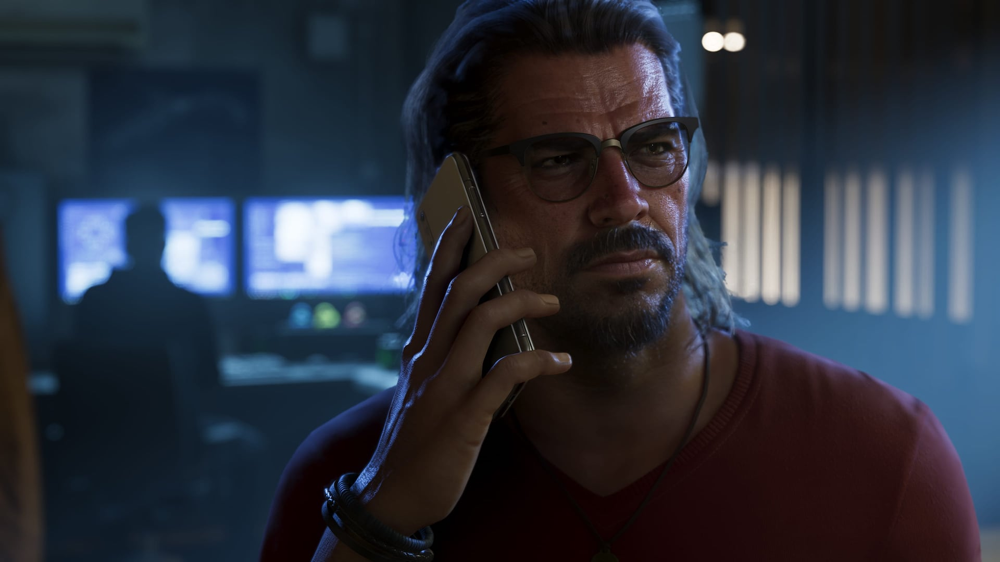
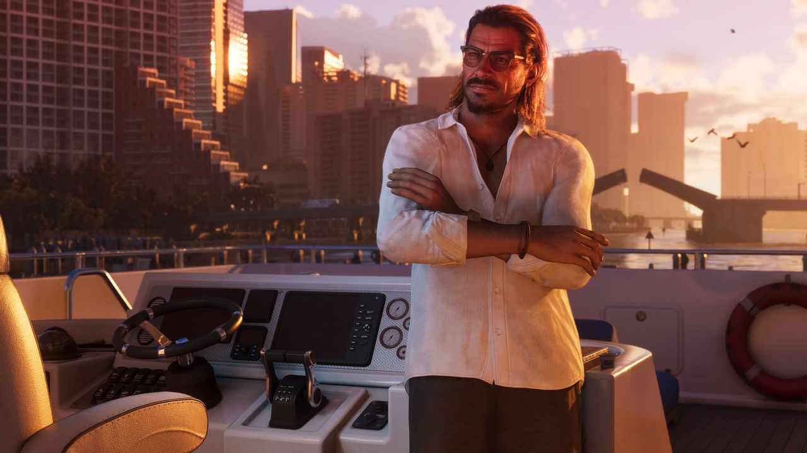
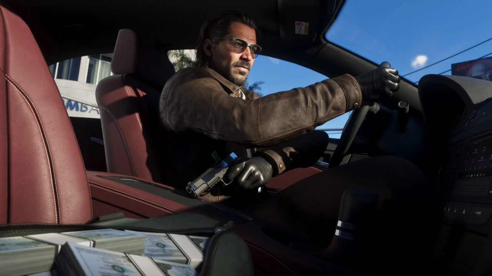
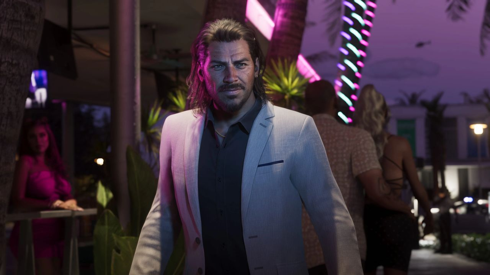

© Rockstar Games / Take-Two Interactive
Raul Bautista
EN BREF
- Rôle : Personnage secondaire, mentor
- Activité : Braqueur de banques
- Entourage : Jason et Lucia
- Armes vues : Pistolet Capo, carabine Duke « Special Ops »
- Doublage : Non annoncé
Raul Bautista est un braqueur de banques chevronné. Sa réplique du site officiel : « La vie est pleine de surprises, mon ami. Nous ferions tous bien de nous en souvenir ».
Galerie



© Rockstar Games / Take-Two Interactive — images officielles de GTA VI (bandes-annonces, captures, site officiel), via GTA Wiki.
Son histoire selon Rockstar
« L'expérience compte. » Assurance, charme et ruse : Raul est un braqueur aguerri, toujours à la recherche de talents prêts à prendre les risques qui rapportent le plus gros.
« Un professionnel s'adapte. » Mais son imprudence fait monter les enjeux à chaque coup. Tôt ou tard, son équipe devra doubler la mise ou se retirer de la table.
Son rôle dans l'histoire
Selon le GTA Wiki, Raul sert de mentor plus âgé à Jason et Lucia : il leur apporte l'expérience criminelle qui leur manque à leur arrivée à Vice City et les initie aux braquages de grande envergure. Rockstar a aussi voulu qu'il incarne Vice City et sa culture criminelle locale.
Dans l'Extended Look
Jason et Lucia le récupèrent en pleine fuite, poursuivi par la police de Vice Beach. Une fois tirés d'affaire, Raul leur lance de « garder leur téléphone allumé », ce qui laisse penser qu'ils font désormais partie de son équipe.